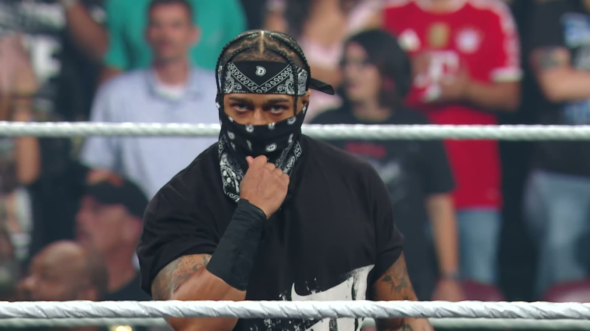

WarGames, Bloodline contro 946: il mio pronostico
Cinque contro cinque, una gabbia, e stavolta la Bloodline potrebbe perdere. Perché a Survivor Series la 946 ha bisogno di una cosa sola.
Cinque contro cinque. Una gabbia. E stavolta la Bloodline potrebbe perdere.
A Survivor Series, a Houston, tutto porta a una WarGames: Bloodline contro 946. Vediamo le squadre e poi vi dico come la vedo io.
Data, orario italiano e dove vederla: trovi tutto nella pagina Survivor Series 2026: WarGames.
La squadra della 946
Da una parte c'è il gruppo di Royce Keys, con Bronco Nima, Lucien Price e Jaida Parker.
E poi il colpo di mercato: Carmelo Hayes, che si è presentato col passamontagna e un piede di porco per salvare Keys dalla Samoan Spike di Solo. Un ingresso che ha cambiato il peso della squadra.

La squadra della Bloodline
Dall'altra parte, secondo le prime voci:
- Roman Reigns
- Jacob Fatu
- Jimmy Uso
- Jey Uso
- Solo Sikoa
Sulla carta, la squadra più forte del mondo. Difficile trovare cinque nomi che facciano più paura, dentro una gabbia.
Il punto, però, è un altro
La 946 è un gruppo nuovo. E un gruppo nuovo, per diventare credibile, ha bisogno di una cosa sola: battere i più forti.
Puoi vincere dieci match in TV, puoi attaccare chi vuoi nel backstage, ma finché non batti la squadra di riferimento resti "quelli nuovi". Una WarGames contro la Bloodline è esattamente l'occasione per smettere di esserlo.
Un gruppo nuovo non diventa credibile vincendo facile. Diventa credibile battendo i più forti.
Il mio pronostico
Per questo il mio pronostico è: vince la 946.
E c'è un'altra cosa che mi gioco. Secondo me qualcuno della Bloodline… non arriverà fino alla fine dalla parte giusta. Non vi dico chi, ma tenete gli occhi aperti quando la gabbia si chiude.
Se poi aggiungiamo che la Bloodline non ha ancora una risposta per Jaida Parker, il quadro si complica ancora di più. Ne ho parlato qui: Naomi sta per tornare.
E tu?
Chi vedi vincere? Bloodline o 946? Scrivilo nei commenti su YouTube o sui miei social.
Io sono Tony Wrestling. Ci vediamo alla prossima.
Domande frequenti
Chi c'è nella WarGames di Survivor Series?
Da una parte la 946 (Royce Keys, Bronco Nima, Lucien Price, Jaida Parker e Carmelo Hayes). Dall'altra la Bloodline, che secondo le prime voci sarà Roman Reigns, Jacob Fatu, Jimmy Uso, Jey Uso e Solo Sikoa.
Chi vince la WarGames tra Bloodline e 946?
Il mio pronostico è la 946, perché un gruppo nuovo diventa credibile solo battendo i più forti.
Dove si svolge Survivor Series?
A Houston.